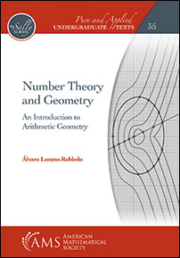

| Classes |
|---|
| Instructor |
|---|
| Text & Prerequisites |
|---|
|  |
by UConn professor Álvaro Lozano-Robledo. Álvaro has supplied me with watermarked pdfs of the chapters we will be covering.. I will make these available on HuskyCT as we begin each new chapter. Please keep these chapters off the internet/public domain. They are for your use only! Because of Álvaro's generosity it is not necessary to purchase this text. However, I would recommend buying a physical copy of the text if you prefer physical copies. Reading will be a large portion of this course. |
| Goals |
|---|
The overarching goal for the semester is to learn as much as we can about number theory. The primary mathematical motivation will be working to understand the statement and some underpinnings of various proofs of quadratic reciprocity. However, the practical goal that will take precedence in deepening our familiarity with and maturity in mathematics. This includes developing the ability to communicate mathematics and reason mathematically. We will spend our time reading, understanding, responding to, and creating mathematical arguments. You are probably familiar with having this sort of mathematical dialogue with an instructor, but a goal of this course is to open and develop this kind of dialogue with your peers.
| Course Content and Extra Resources |
|---|
Our primary reference will be
Number Theory and Geometry: An Introduction to Arithmetic Geometry.
A very loose and almost sure to be augmented list of the chapters we will attempt to cover
| Chapter | Chapter Title | |
| 1 | ||
| 2 | 2.1 - 2.10 | |
| 3 | ||
| 4 | ||
| 5 | ||
| 6 | ||
| 7 | ||
| 8 | ||
| 9 | ||
| 10 |
| Important Dates |
|---|
| Wednesday, January 19 | First Day of Class |
|---|---|
| Monday, February 14 | In-Class Quiz 1 |
| Monday, March 7 | In-Class Quiz 2 |
| Wednesday & Friday, March 30 and April 1 | Primary Source Project |
| Monday, April 11 | In-Class Quiz 3 |
| Friday, April 29 | Last Day of Class |
| Monday, May 2 through Saturday, May 7 | Exam Week (We will probably have a take-home final.) |
| Grades |
|---|
What are grades? What purpose do they serve? What do they mean? This blog post outlines some problems with grades.
The following is the grading scheme that I would like to implement for the course.
I feel it strikes a balance between a variety of different manners of doing and presenting mathematics.
Please let me know if you would like to see any changes.
I would like everyone to understand how grades are calculated.
| Homework |
|---|
There will be psuedo-weekly homework assignments this semester. They will be created by me.
They will feature exercises from the book and things I find interesting.
Due dates for homework assignments are given in the
Course Schedule.
As explained there, homework assignments must be submitted in class on the day they are due.
Quizzes will feature problems that are remarkably similar to the homework or to problems we work in class,
so spending time completing homework to perfection is
doubly advantageous.
Homework without a staple and/or with "frills" will not be accepted.
It is natural and expected to struggle on homework. You are encouraged to work together and come to office hours for help with homework. Homework is a place to learn how to do things! You may use whatever resources you wish on the homework as long as you cite your sources and submit your own work.
Two other, more big-picture resources are the Academic Achievement Center and the Keep Learning Site.
Finally, I have three+ hours a week that are specifically for helping y'all. Please come to my office hours with any questions! If you think a question is dumb or you think you "don't understand anything," then that is even more reason to come to my office hours. I am very used to struggling with math and I want to help everyone learn in this course. I can assure you that I have made math mistakes that are much more embarrassing than any mistake you will make in this course.
Class attendance is not mandatory this semester, though it is highly encouraged. I know things are difficult for everyone right now and I know flexibility is appreciated, so I will not grade participation directly. However, we will have in-class assessments.
| Quizzes and Final |
|---|
We will have three quizzes and a (probably take-home) final.
In-class quizzes are closed book and notes. Quizzes will likely last 25 minutes.
Make-Up Policy: In general, no make-ups for quizzes will be given.
If you are going to miss a quiz and can show proof of some officially acceptable reason, e.g.: a verifiably documented medical excuse
or a conflicting official university sanctioned activity that cannot be rescheduled, then we can make arrangements.
If you are sick or something comes up, then please let me know as far before the assignment or assessment is due as you can.
We will do our best to get through this semester safely and healthily.
On as case-by-case basis, I can try to make arrangements in a way that is as fair and equitable as possible.
| Synchronicity |
|---|
| Statement of Expectations |
|---|
This is an incredibly tough time for everyone, myself included. I understand everyone is dealing with things differently and I will do my best to be flexible and accomodating. I ask you to be open with me and to discuss issues with me when they come up. I will listen and do what I can to help you succeed in this course. Conversely, I am super excited to teach this course and I love this material, but distance learning is very new to me. I ask that you be understanding of the mistakes I will certainly make, and I ask that you give me honest feedback about how I can improve.
As individuals and as a class we will be respectful of everyone; language or behavior that discriminates against anyone will not be tolerated. We will avoid stereotypes about who is "good" at math. Math is difficult, but also beautiful, and as a class we will work together to overcome difficulties and share the beauty. This is especially true with group work. You must treat your group members with respect and engage in positive and constructive conversations.
| Academic Integrity |
|---|
I expect you to be familiar with and abide by UConn's academic integrity policy at all times. There should be no help given or received on exams or quizzes, not from other people, not from tutors, not from online sites. Academic misconduct includes, but is not limited to, providing or receiving assistance in a manner not authorized by the instructor in the creation of work to be submitted for academic evaluation (e.g. papers, projects, examinations and assessments - whether online or in class); presenting, as one's own, the ideas, words or calculations of another for academic evaluation; doing unauthorized academic work for which another person will receive credit or be evaluated; using unauthorized aids in preparing work for evaluation (e.g. unauthorized formula sheets, unauthorized calculators, unauthorized programs or formulas loaded into your calculator, etc.); and presenting the same or substantially the same papers or projects in two or more courses without the explicit permission of the instructors involved. A student who knowingly assists another student in committing an act of academic misconduct shall be equally accountable for the violation, and shall be subject to the sanctions and other remedies as described in Appendix A of the Student Code. Sanctions shall include, but are not limited to, a letter sent to the Office of Community Standards of the University; a grade of 0 on the assignment, quiz or exam; a grade of F for the course.
| Support From Me |
|---|
I pledge to do my utmost as your instructor to support you and your success in this class. Regardless of your race, color, religion, sex, sexual orientation, gender identity or expression, age, disabilities, citizenship, or national origin, I am happy that you're taking this course and I am excited to help you learn math. I will do everything I can to make sure you feel welcome in our classroom and address any aspects or elements of the course that may make you feel unwelcome. This runs the gamut from being willing to make accomodations for religious observances to making sure our classroom is a supportive place. Please come to me with any concerns you have! I'm here to listen and to help give you the tools and conditions to be successful in this course.
| Student Athletes |
|---|
If you are a student athlete, let me know soon. Speak with your CPIA counselor and talk with them about any dates that conflict with your participation in this course. I should know of these conflicts within the first two weeks of the course. Alternate arrangements for away game conflicts with assignments might be possible.
| Accessibility Issues |
|---|
If you have a learning or physical disability, the Center for Students with Disabilities (CSD), Center for Students with Disabilities at https://www.csd.uconn.edu and at phone: 860-486-2020 and video phone: 860-553-3243 (room 204 of the Wilbur Cross Building) should have contacted me with notification of your needed accommodations. As electronic communication does not always work as desired, please let me know of any issues you have and I can contact the CSD on your behalf.
In addition, if you have accessibility issues, I encourage you to discuss possible accommodations with me and consult the CSD, as this office can help determine appropriate accommodations for you.